Nueva jornada de capacitación para líderes regionales
Cientos de líderes se reunieron para recibir herramientas teológicas y prácticas, preparándose para impactar sus entornos de manera más efectiva este año.

Nuestro gran evento cada 4 años.

Información de eventos y programas de la región y las áreas.
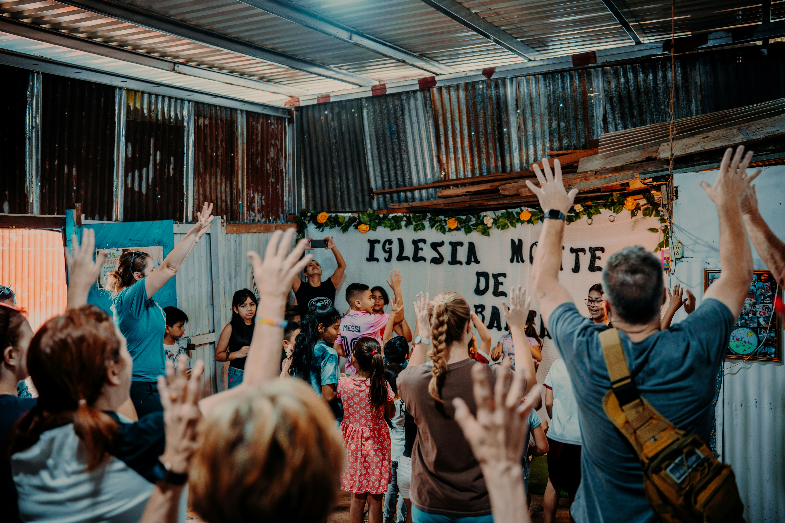
Información acerca de los proyectos de misiones en desarrollo.

Información detallada sobre nuestro curso de preparación de misiones.

Revisión de los próximos eventos y jornadas de entrenamiento.
Accede a nuestra selección de libros recomendados para tu formación.

Material audiovisual y grabaciones de nuestros últimos seminarios.
Programas de asistencia, acompañamiento y cuidado intensivo para obreros.
Otros sitios y plataformas aliadas con información perteneciente a misiones.
Nacida en 1999 para expandir la obra misionera, JIBACAM significa "Junta Iberoamericana de Misiones y del Caribe". Es el Departamento de Misiones de la Iglesia Wesleyana.
Hemos avanzado de ser sólo un promotor a
organizarnos como una agencia
misionera de envío y formación de misioneros con
todos los desafíos
que esto representa para el Reino.
Durante años ha motivado, desafiado,
instruido y capacitado líderes misionales
a través del congreso bianual Misionero
buscando tener una Iglesia apasionada
por la misión de Dios, y de esta forma
llegar a los pueblos no alcanzados con el
mensaje del evangelio.
Estamos encargados de gestionar la obra misionera y plantar nuevas Iglesias Wesleyanas en el contexto Iberoamericano y Caribeño, creyendo en un evangelio práctico que transforma vidas.

Tener una iglesia plenamente involucrada en el cumplimiento de la misión de Dios.
Equipar, discipular y enviar a cada creyente para compartir el evangelio y servir a nuestra comunidad con el amor de Jesús.
Existimos para impulsar, promover, y concienciar la Obra Misionera en la Iglesia.
Nuestro trabajo en acción para el avance de la obra misionera.
Formamos líderes con herramientas teológicas, prácticas y humanas para impactar su entorno y el campo misionero.
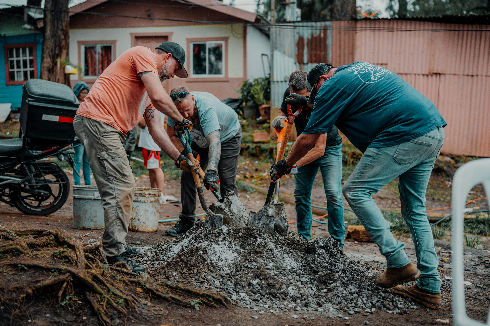
Apoyamos proyectos misioneros, sociales y de discipulado adaptados a las necesidades reales de cada cultura.

Acompañamos iglesias a desarrollar visión misionera, planes de trabajo efectivos y compromiso global.
Nuestras raíces se remontan a 1843 en Nueva York, con una intensa pasión por la santidad y las misiones. Tras décadas de expansión en África e Iberoamérica, en 1968 nace la Iglesia Wesleyana (The Wesleyan Church) mediante la unión de dos organizaciones históricas.
Entre 1904 y 1959, la semilla fue plantada en Perú, México, Brasil, Colombia, Puerto Rico y Honduras, estableciendo un legado de fe que superó fronteras y desafíos culturales en toda la región.
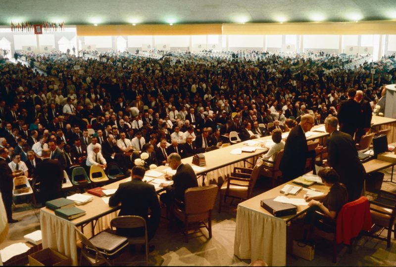
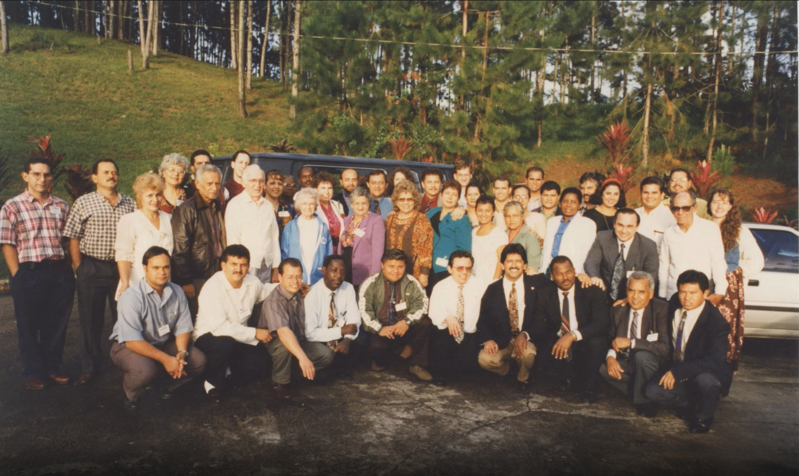
El año 1996 marcó un punto de inflexión con el Congreso de Misiones en Puerto Rico. Bajo el lema "Pídeme y te daré las naciones", se forjó un espíritu de unidad que impulsó nuevos campos en Panamá, Nicaragua y Chile.
En 1999, durante el IV Congreso en Bogotá, se formalizó oficialmente la Junta Iberoamericana y del Caribe de Misiones (JIBACAM). Este movimiento consolidó la visión de una iglesia latina enviando misioneros a lugares tan lejanos como Guinea Ecuatorial, África.
Hoy, JIBACAM es un movimiento vibrante que ha extendido su obra a más de 15 países, incluyendo Venezuela, España, Cuba y Bolivia. Hemos evolucionado de ser un esfuerzo misionero a convertirnos en el brazo ejecutor de la Conferencia Wesleyana Iberoamericana.
Con proyectos transculturales activos en África y Asia, trabajamos con pasión para alcanzar las naciones, demostrando que con fe y unidad, no existen límites geográficos para el mensaje de Cristo.
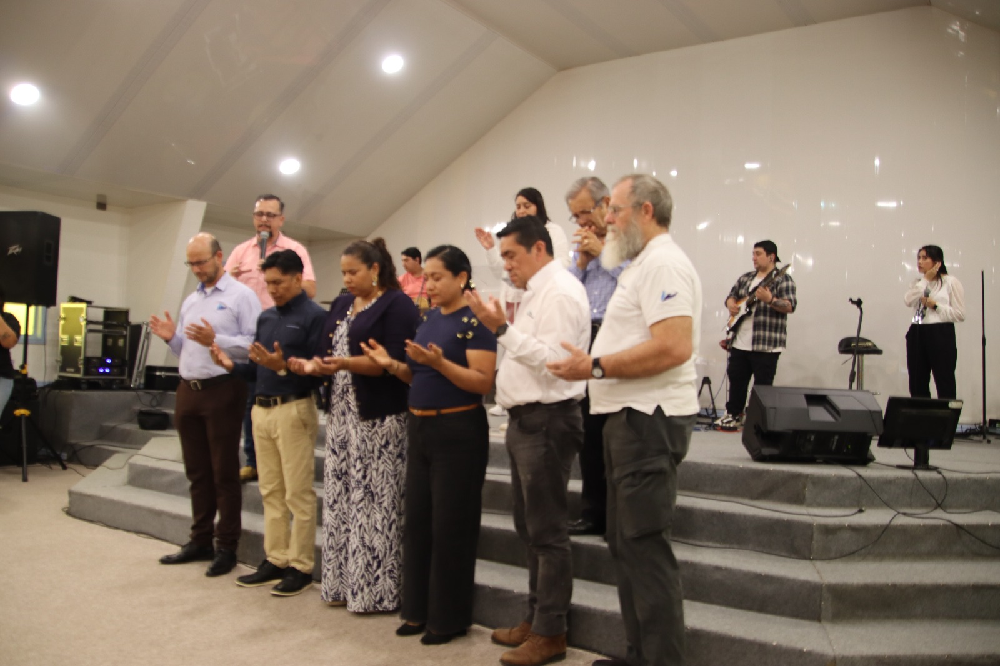

Existimos para impulsar, promover y concienciar la obra misionera en toda la Iglesia Wesleyana de Iberoamérica y el Caribe. Nuestro sueño es transformar “campos misioneros” en una poderosa “fuerza misionera” latina que lleve el mensaje de salvación, santidad y transformación a los no alcanados, cumpliendo la Gran Comisión en nuestro contexto cultural.
Nuestra meta es unificar un plan de acción, comprometiendo a los Superintendentes buscando líderes misionales y que cada país descubra llamados en las misiones y los entrenen e involucren en dar, orar e ir.
Este movimiento ha sido clave para que la Iglesia Wesleyana crezca de unos pocos países a más de 20 naciones en las últimas décadas, impulsada principalmente por líderes y misioneros iberoamericanos.
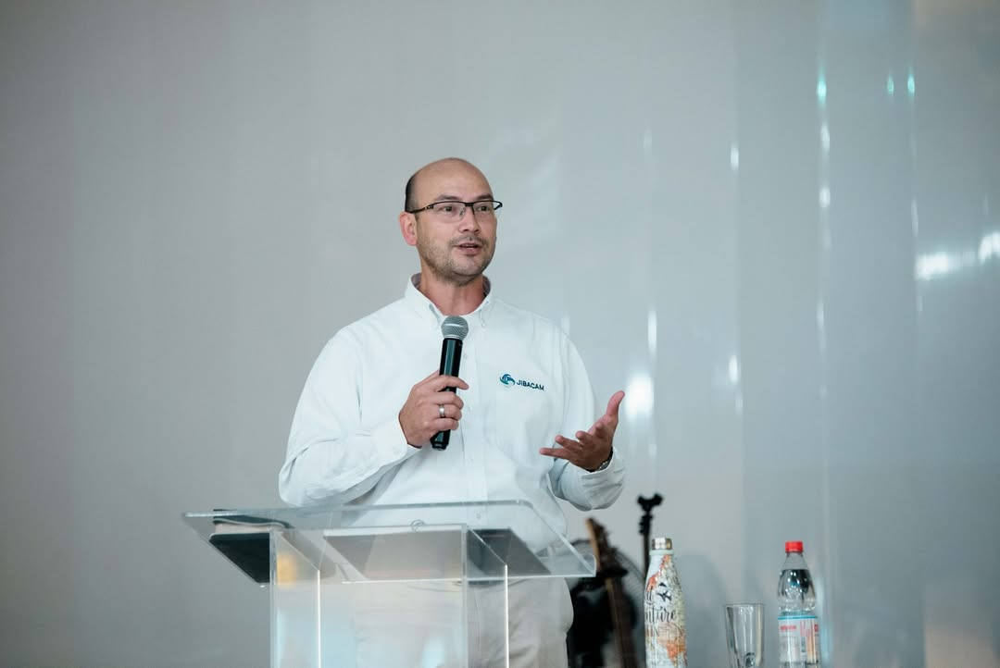
DIRECTOR
20 años de experiencia en misiones, capacitado en traducción Bíblica, estudios en Linguística, antropología y misionología.
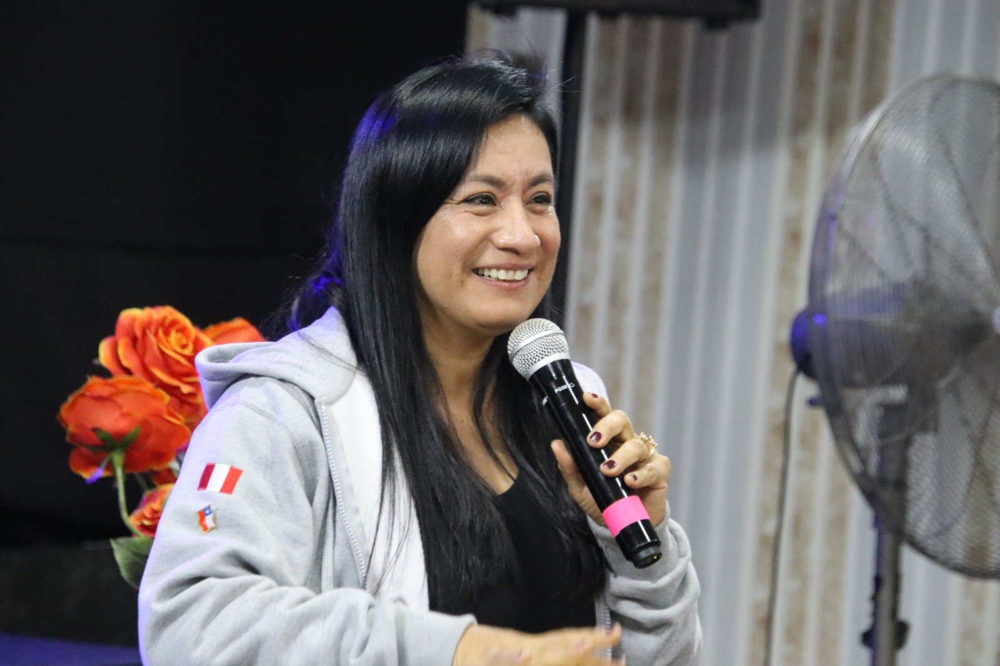
SECRETARIA
Líder comprometida con la gestión adminstrativa y el fortalecimiento de la obra misionera regional.
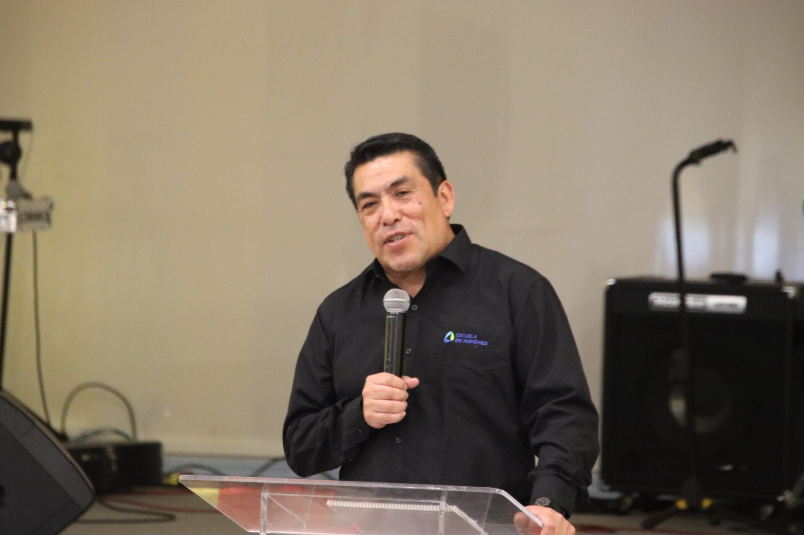
TESORERO
Licenciado en Teología. 22 años de ministerio, siendo docente en la Escuela de Misiones e Institutos Bíblicos en Chile.
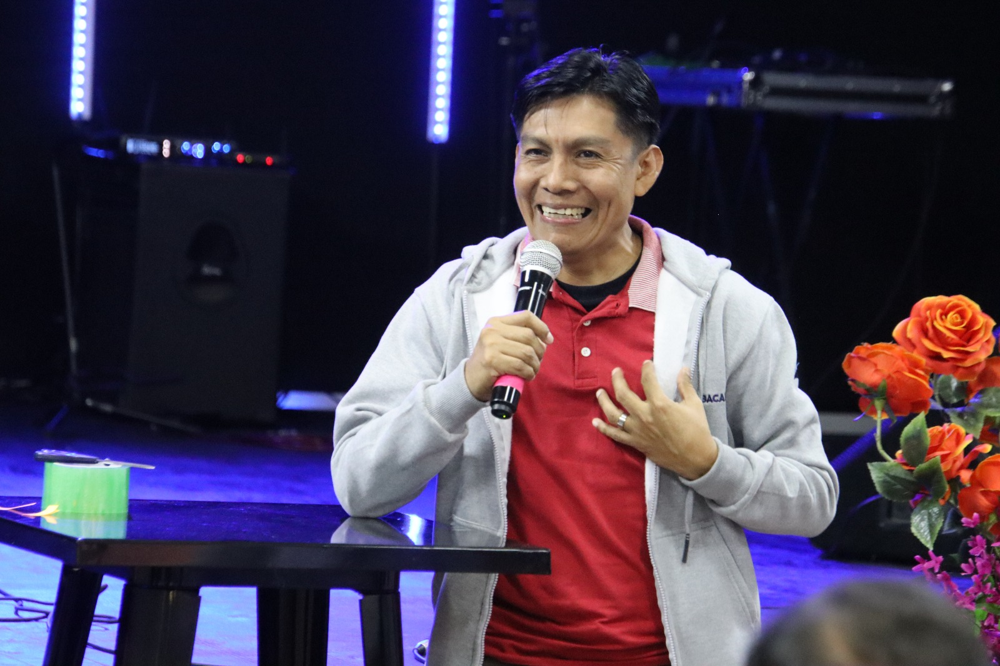
VOCAL
Director de Misiones de Panamá, impulsando el crecimiento de la Iglesia Wesleyana en Centroamérica.
VOCAL
Líder misional enfocada en la movilización de recursos y formación de nuevos obreros.
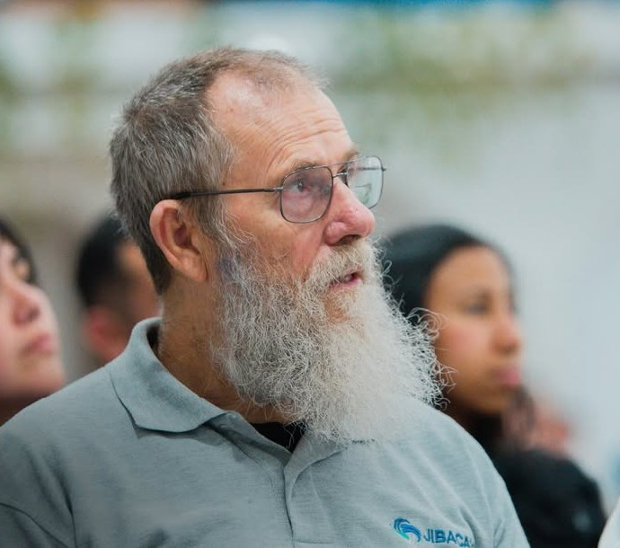
MENTOR Y CONSEJERO
Misionero con Global Partners desde 1986, brindando sabiduría y guía estratégica a la junta.

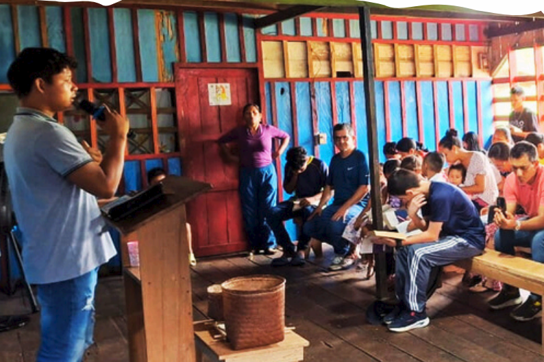
Amazonas, Guajira, Uruguay, España, India, Japón, Asia Sureste y más fronteras de misión.
Formando misioneros y expandiendo la visión: de 6 a 20 países en 20 años de historia.

En pleno desarrollo, trabajando codo a codo con coordinadores nacionales en cada país.
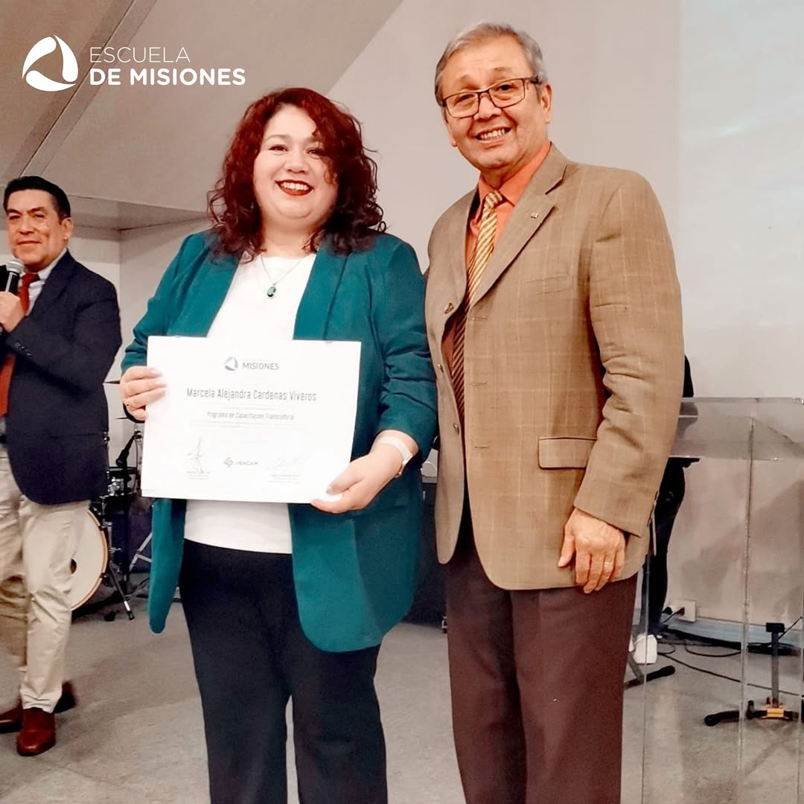
Capacitando a la próxima generación de obreros. Formación 100% online, con graduados en 2026.

Inspirar, equipar y movilizar a la iglesia hacia el desafío transcultural. Un tiempo especial diseñado para transformar tu visión misionera.
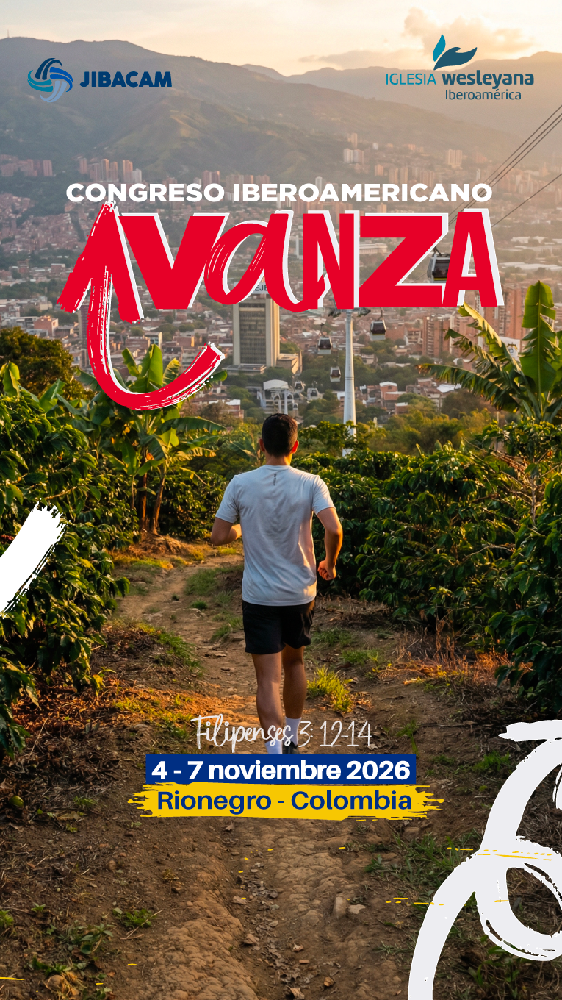
Últimas actualizaciones y testimonios del campo misionero.
Cientos de líderes se reunieron para recibir herramientas teológicas y prácticas, preparándose para impactar sus entornos de manera más efectiva este año.

Un nuevo espacio dedicado a proyectos sociales y de discipulado ha abierto sus puertas para atender las necesidades reales de la comunidad local.
Acompañamos a decenas de iglesias locales que han logrado desarrollar una visión misionera vibrante y planes de trabajo efectivos con sus jóvenes.

Un tiempo de desconexión, juegos y renovación espiritual diseñado especialmente para fortalecer a las nuevas generaciones.

Aprende herramientas prácticas y bíblicas para mejorar la comunicación, resolver conflictos y fortalecer el amor en tu hogar.

Unámonos como iglesia para impactar nuestra comunidad con actos de servicio, entrega de alimentos y amor al prójimo.
¿Tienes dudas, necesitas oración o quieres saber más? Escríbenos, estamos aquí para ti.
Av. Principal 123, Ciudad
+56 9 1234 5678
contacto@iglesia.com